🎯 Pourquoi ce chapitre ?
D'après le programme officiel tunisien (Thème 1, Partie I), ce chapitre vise à :
📚 Préacquis
- Ch.1 — La malnutrition (suralimentation et sous-alimentation) justifie la nécessité d'une alimentation équilibrée.
- Les aliments sont composés d'aliments simples (protides, lipides, glucides) et de nutriments (eau, sels minéraux, vitamines).
- La digestion (Ch.3 à venir) transforme les aliments simples en nutriments absorbables.
❓ 4 Questions directrices
- Quels sont les différents aliments simples et leurs propriétés ?
- Quels sont nos besoins qualitatifs (AAE, AGE) ?
- Quels sont nos besoins quantitatifs en énergie et nutriments ?
- Comment établir une ration alimentaire équilibrée ?
🧠 Comprendre avant de mémoriser
Ce chapitre répond à une question fondamentale : de quoi notre corps a-t-il besoin pour fonctionner ? La réponse tient en trois familles d'aliments simples — glucides (carburant), protides (bâtisseurs) et lipides (réserve d'énergie) — et une règle d'or : GLP = 4.2.1. Mais les besoins varient selon l'âge, le sexe, l'activité et l'état physiologique. La science de la nutrition permet d'établir des rations personnalisées.
Clique sur chaque notion · Pièges CAPES et connexions révélés
🧪 Les Glucides
Formule brute Cₙ(H₂O)ₙ — «hydrates de carbone». Principale source d'énergie (4 kcal/g).
| Classe | Exemples | Propriétés |
|---|---|---|
| Oses (monosaccharides) | Glucose, Fructose, Galactose, Ribose | Solubles, réducteurs, non hydrolysables |
| Diholosides | Saccharose, Maltose, Lactose | Solubles, hydrolysables → 2 oses |
| Polyosides | Amidon, Glycogène, Cellulose | Insolubles, non réducteurs, polymères d'oses |
🧬 Les Protides
Composés quaternaires C,H,O,N (+S,P). 4 kcal/g. 20 acides aminés différents, 8 essentiels (AAE).
| Niveau | Structure |
|---|---|
| Acide aminé | R-CH(NH₂)-COOH |
| Dipeptide | Liaison peptidique : CO-NH |
| Protéine | > 50 AA, structure 3D |
🫒 Les Lipides
Composés ternaires C,H,O. 9 kcal/g — les plus énergétiques. Esters d'alcool (glycérol) + acides gras.
| Type AG | Caractéristique | Exemple |
|---|---|---|
| Saturés | Pas de double liaison | Acide palmitique |
| Monoinsaturés | 1 double liaison | Acide oléique (huile d'olive) |
| Polyinsaturés | Plusieurs doubles liaisons | Oméga 3, Oméga 6 |
📊 Rations & GLP
Règle GLP = 4:2:1 en masse. Glucides 55-60%, Lipides 25-30%, Protides 15%. Pyramide alimentaire : base = eau + féculents, sommet = graisses + sucreries. Besoins variables selon âge, sexe, activité, état physiologique.
⚠️ 3 Pièges + 🔗 Connexions
💭 Réflexion
Classification et propriétés des glucides
Les glucides sont des molécules organiques de formule brute Cₙ(H₂O)ₙ. Leur principal rôle est de fournir de l'énergie à l'organisme (4 kcal/g). Ils sont classés selon leur taille moléculaire, du plus simple (oses) au plus complexe (polyosides).
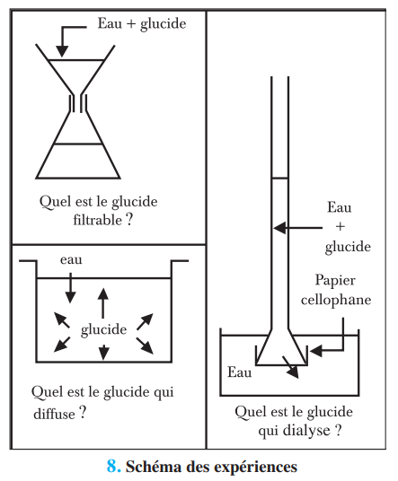
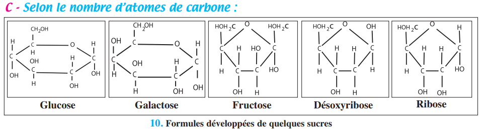
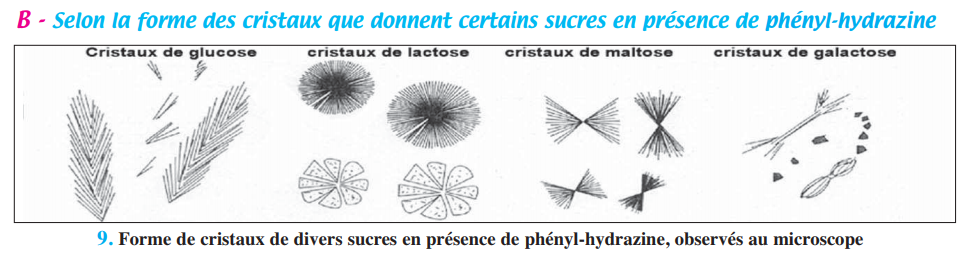
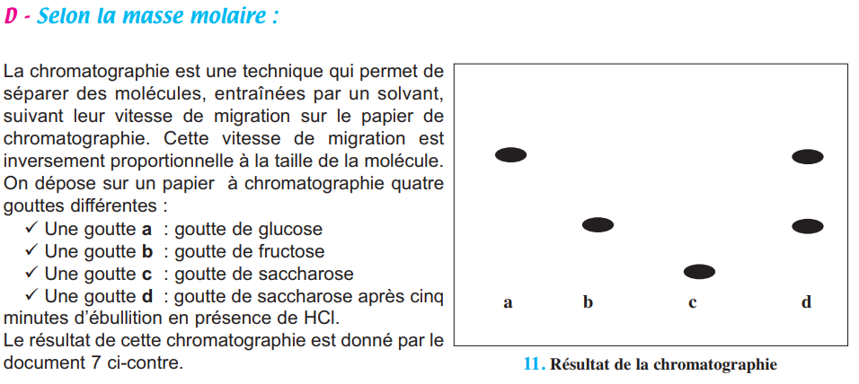
| Classe | Exemples | Formule | Propriétés clés |
|---|---|---|---|
| Oses (monosaccharides) Hexoses (6C) | Glucose, Fructose, Galactose | C₆H₁₂O₆ | Solubles, diffusibles, réducteurs, non hydrolysables |
| Oses Pentoses (5C) | Ribose (ARN), Désoxyribose (ADN) | C₅H₁₀O₅ / C₅H₁₀O₄ | Constituants des acides nucléiques |
| Diholosides | Saccharose (Glu+Fru), Maltose (Glu+Glu), Lactose (Glu+Gal) | C₁₂H₂₂O₁₁ | Solubles, cristallisables, hydrolysables → 2 oses |
| Polyosides | Amidon, Glycogène, Cellulose | (C₆H₁₀O₅)ₙ | Insolubles, non cristallisables, hydrolysables → nombreux oses |
1. Le glucose est un .
2. Le saccharose est un diholoside formé de .
3. L'amidon donne une coloration .
Structure, propriétés et besoins en protides
Les protides sont des composés quaternaires (C,H,O,N ± S,P). Ils sont présents dans les œufs, viandes, lait, poissons, légumineuses. L'hydrolyse totale libère des acides aminés (20 différents). Parmi eux, 8 sont essentiels (AAE) car non synthétisables par l'organisme.
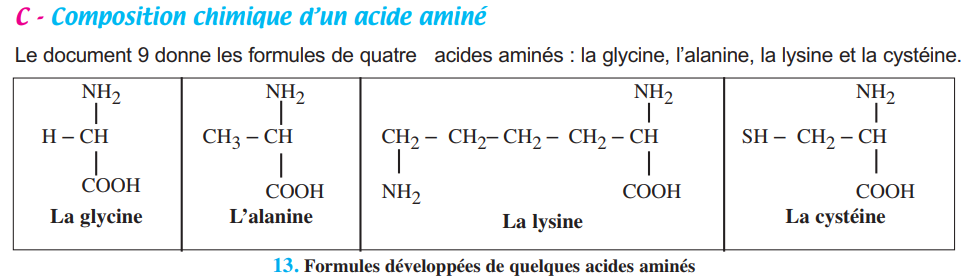
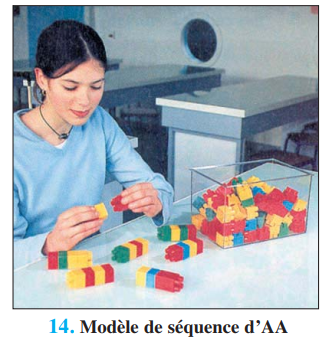
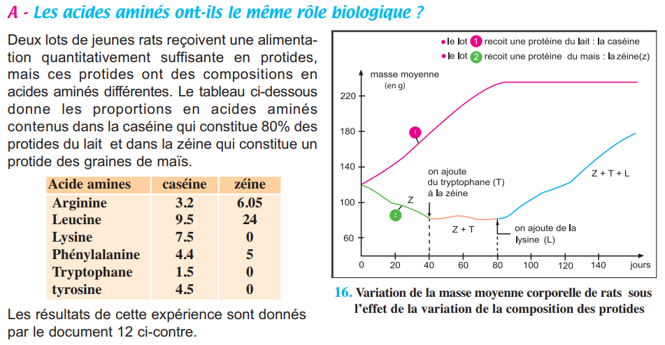
| Niveau structural | Définition | Exemple |
|---|---|---|
| Acide aminé (AA) | Unité de base, formule R-CH(NH₂)-COOH | Glycine, Lysine, Tryptophane |
| Dipeptide | 2 AA liés par liaison peptidique (-CO-NH-) | Gly-Ala |
| Polypeptide / Protéine | > 50 AA, structure tridimensionnelle | Hémoglobine, Insuline, Ovalbumine |
1. La liaison peptidique s'établit entre .
2. Les AAE sont .
Structure, propriétés et besoins en lipides
Les lipides sont des composés ternaires (C,H,O). Ce sont les plus énergétiques : 9 kcal/g. Ils sont insolubles dans l'eau. Un lipide simple = ester d'alcool (glycérol) + acides gras.
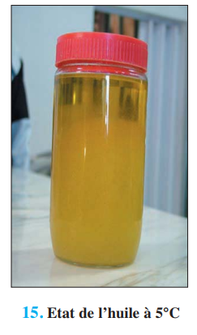
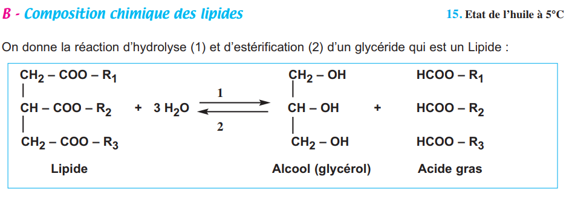
| Type d'acide gras | Caractéristique | Exemple | Effet santé |
|---|---|---|---|
| Saturés | Pas de double liaison | Acide palmitique, stéarique | ⬆️ LDL → risque cardiovasculaire |
| Monoinsaturés | 1 double liaison | Acide oléique (77% huile d'olive) | ⬇️ LDL · ⬆️ HDL — protecteur |
| Polyinsaturés | ≥ 2 doubles liaisons | Oméga 3, Oméga 6, acide linoléique | Anti-agrégant plaquettaire |
1. Les lipides fournissent .
2. L'acide oléique (huile d'olive) est un acide gras .
Rations alimentaires et règle GLP
Une ration alimentaire est l'ensemble des aliments consommés pendant une journée. Elle doit couvrir les dépenses énergétiques et apporter tous les nutriments nécessaires. Les besoins varient selon l'âge, le sexe, l'activité et l'état physiologique.
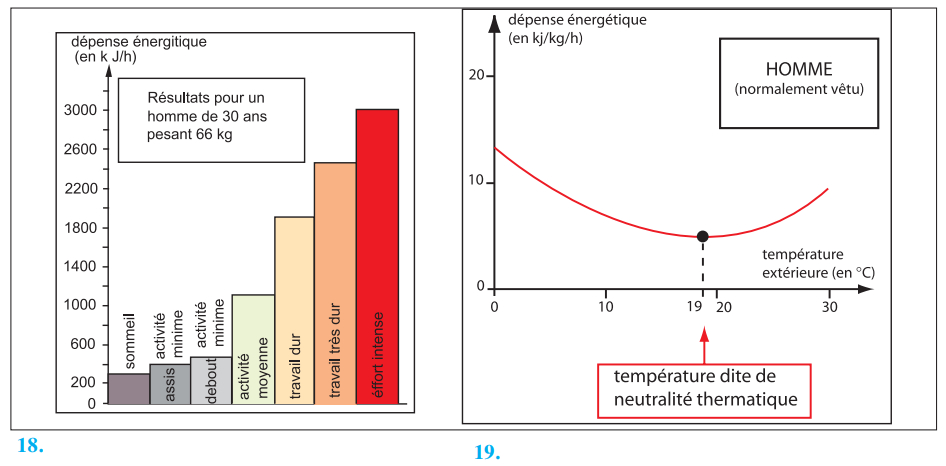
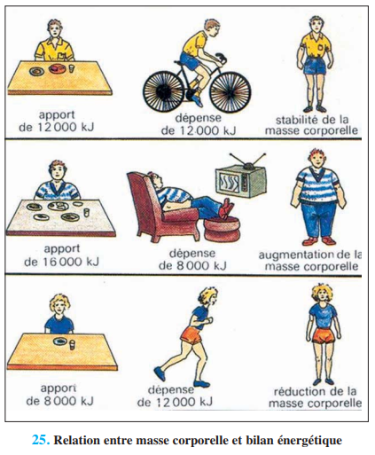
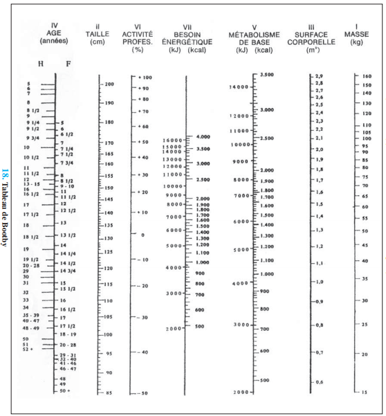
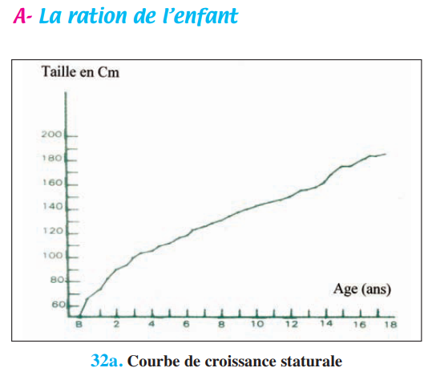
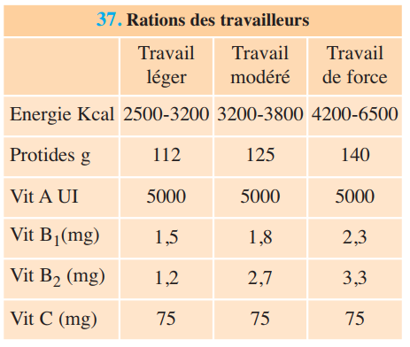
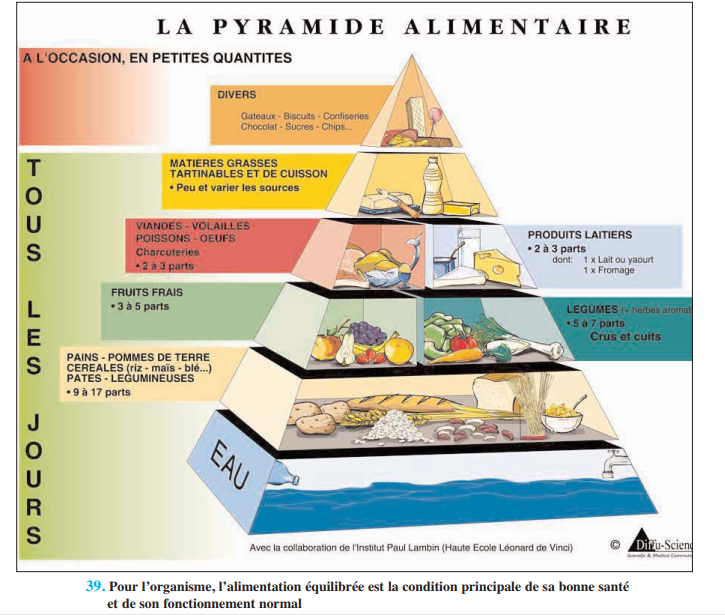
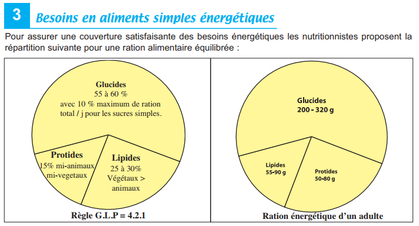
Complexes préférés
Végétaux > animaux
½ animaux + ½ végétaux
Règle GLP = 4:2:1 en masse · Équivalences : 100g viande = 100g poisson = 2 œufs = ½L lait = 60g fromage
| Profil | Énergie (kcal/j) | Protides (g/j) | Particularité |
|---|---|---|---|
| Adolescent 13-15 ans | 2 588 | 85 | Ration de croissance |
| Adulte sédentaire (H) | 2 500 | 80-100 | Ration d'entretien |
| Femme enceinte | 2 270 | 75 | Besoins Ca ++ (1000 mg/j) |
| Femme allaitante | 2 510 | 80 | Besoins Ca +++ (1200 mg/j) |
| Travail de force | 4 200–6 500 | 140 | Jusqu'à 2,5× le sédentaire |
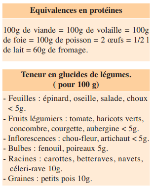
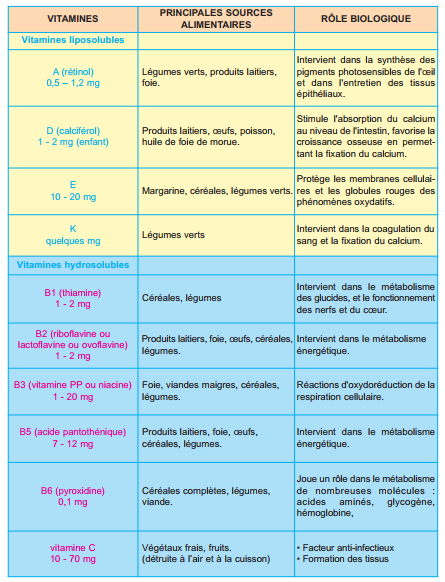
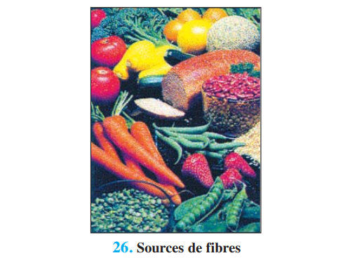
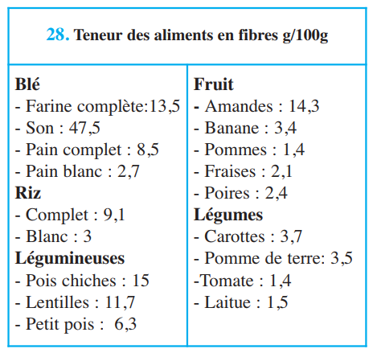
1. La règle GLP signifie .
2. Une femme enceinte a des besoins accrus en .
1 L'eau et les glucides (p.40-41)
L'eau représente . Les glucides ont pour formule brute . Les oses sont . L'amidon est un .
2 Les protides (p.41-42)
Les protides sont formés de . L'unité de base est l'. La liaison peptidique unit .
3 Les lipides (p.42-43)
Les lipides simples sont des . Les acides gras saturés . Les acides gras insaturés ont .
4 Les rations alimentaires (p.44-45)
Une ration équilibrée doit couvrir les dépenses énergétiques et apporter tous les nutriments. La règle GLP en énergie : G=, L=, P=.
5 Variation des besoins (p.45)
Les besoins varient selon : l', le , l' et la température ambiante. L'adolescent a une ration de .
6 Besoins en nutriments non énergétiques (p.46-47)
Les vitamines sont des composés organiques indispensables en petites quantités. On dénombre . Les vitamines liposolubles (A,D,E,K) peuvent être . Les vitamines hydrosolubles (B,C) doivent être consommées .
7 Règles d'une alimentation équilibrée (p.48)
Respecter la pyramide alimentaire · Répartir en · Ne pas sauter le · Éviter le · Préférer l' aux boissons sucrées.
✏️ Ex.1 — QCM du manuel (p.51)
| 1. Une protéine est : | |
| 2. Un acide aminé : | |
| 3. Un lipide : | |
| 4. Un glucide : |
📊 Ex.2 — Diagrammes alimentaires USA/Soudan (p.51)
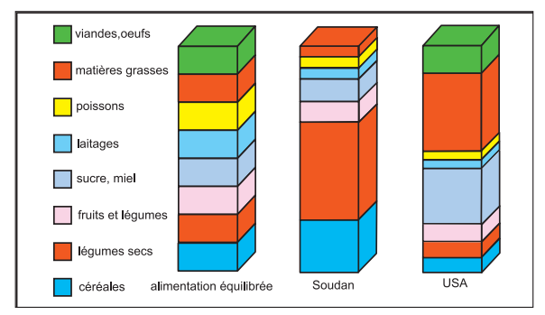
L'alimentation américaine est . L'alimentation soudanaise est .
🐀 Ex.3 — Expérience rats et AAE (p.52)
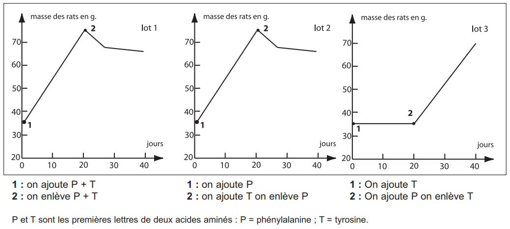
Le lot qui ne reçoit pas de phénylalanine . La tyrosine .
🇹🇳 Ex.4 — Évolution alimentation Tunisie 1980–2000 (p.52)
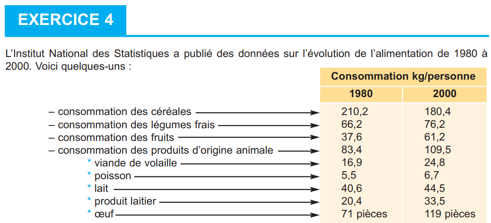
De 1980 à 2000, la consommation de céréales a . La consommation de produits d'origine animale a . Cette évolution traduit .
Exercice principal + bonus d'approfondissement par objectif.
Associer : Glucides → . Protides → . Lipides → .
Test à l'eau iodée : amidon → . Liqueur de Fehling à chaud : glucose → . Réaction de Biuret : protides → .
La ration doit couvrir . Elle est répartie en .
L'adolescent a une ration de . Le travailleur de force a des besoins .
Un diholoside est hydrolysé en . Un polyoside est hydrolysé en .
AAE = . Vitamine D = .
🃏 Flashcards — Paragraphes à trous
✏️ QCM — 20 Questions (Manuel + BAC)
Questions 1-4 (p.51) + 16 questions complémentaires